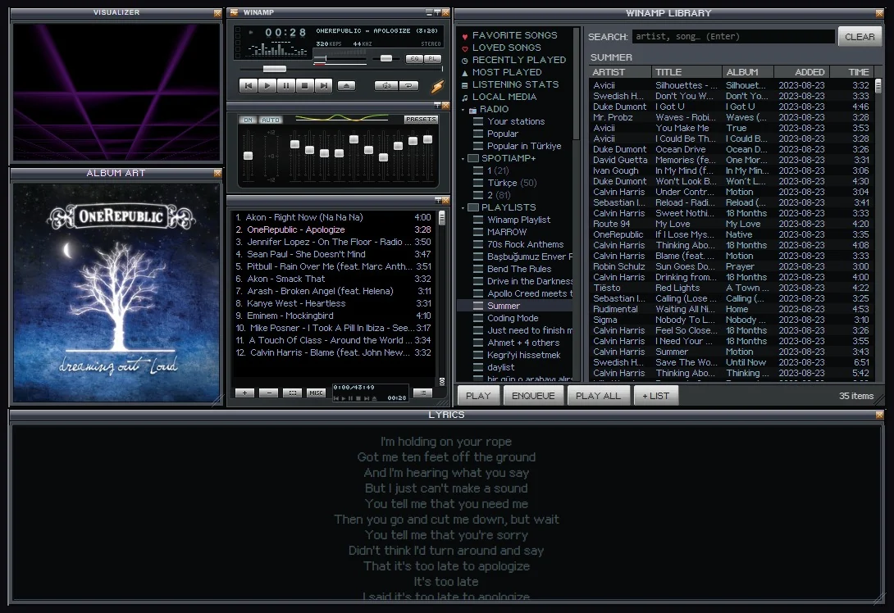
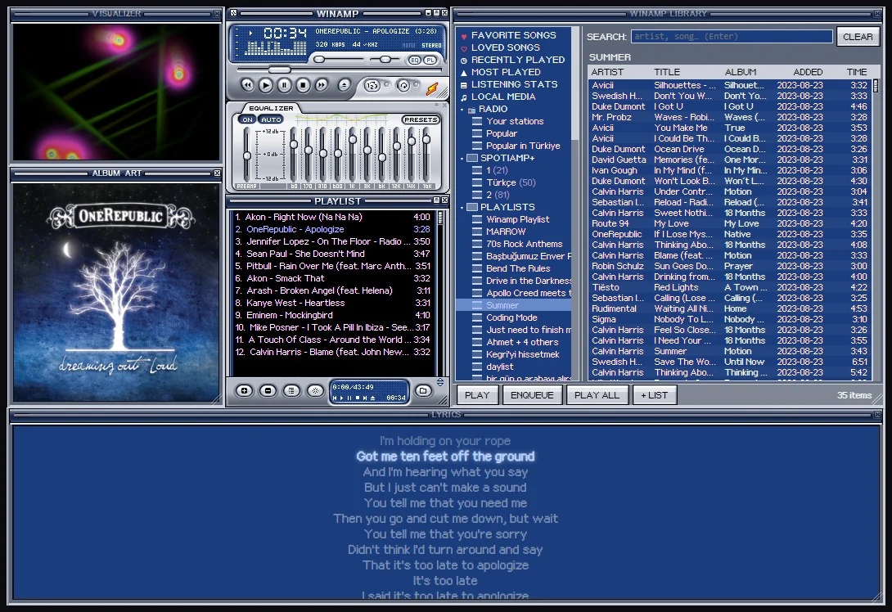
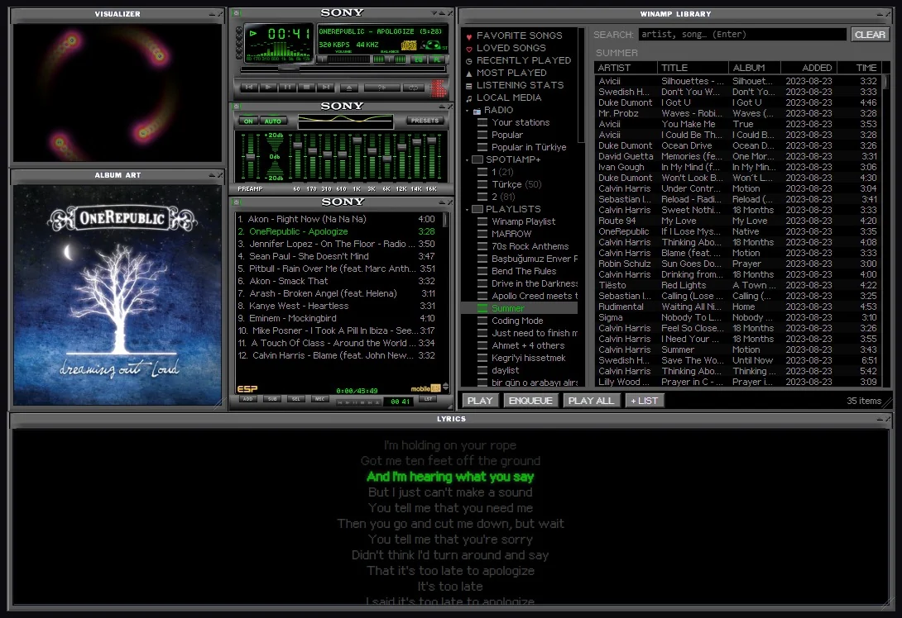
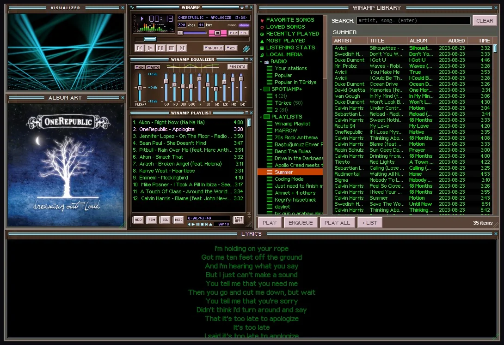

Eleven built in
The classic Winamp look and its Cherry, Amber and Emerald colours, Spotiamp+'s own orange skin, the Classified series by Victhor and the Sony and Nucleo hardware-style skins. Right-click and pick one: it changes live.
The Skin Museum, built in
Open Skins, Skin Museum and browse thousands of skins from the Winamp Skin Museum, search them, star your favourites and put one on with a click.
Or any .wsz you have
Got an old favourite on your disk? Load .wsz from disk and it's on.
The whole skin, not just the colours
A skin brings its mouse cursors, its window shapes (rounded or cut-out edges), its titlebars with the title in its own letters, the spectrum's colours and, if you like, its font for the playlist and the Library. The Library, lyrics and album art windows wear it too.
Which skins work
Classic Winamp 2 skins (.wsz), which is nearly all of them. Winamp 5's modern skins (.wal) are small programs of their own and don't load.